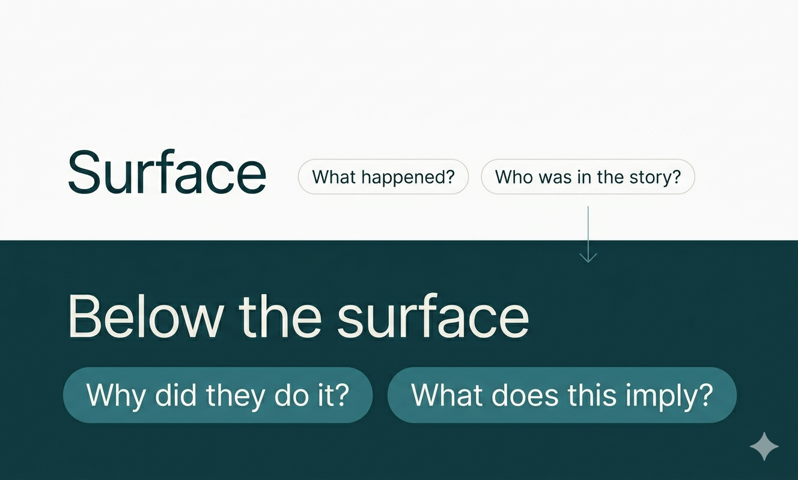
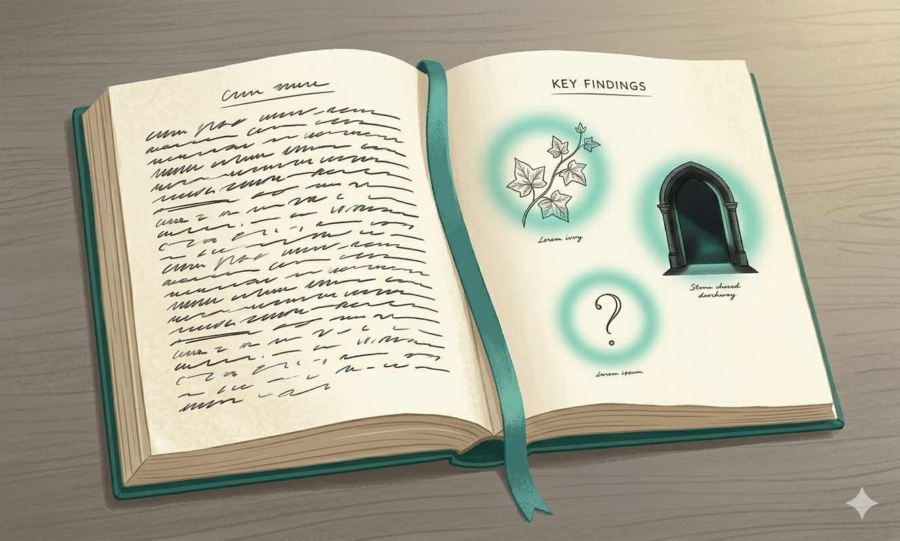

Your child reads aloud without stumbling. They move through chapters at a steady pace. They can summarize the plot when you ask. And then the reading comprehension test comes back with several wrong answers — not on facts, but on meaning.
This happens more than most parents expect. The skill your child demonstrated — smooth, fluent reading — is called decoding. It's a genuine achievement. But in grades 4 through 7, tests are measuring something different: whether your child can read beneath the words, not just across them.
That skill is inference. Inference is the ability to use clues in the text to figure out what isn't directly said. It develops separately from decoding. And unlike decoding, it doesn't improve much just by reading more — it requires a specific kind of practice that most reading apps and even some classrooms don't directly provide.
The four reading comprehension activities in this post are designed to close that gap. None requires preparation. Each takes under ten minutes.
Why Smooth Reading Doesn't Mean Strong Comprehension
The decoding milestone and what comes after it
Early reading instruction is almost entirely focused on decoding: turning letters into sounds, sounds into words, words into sentences. This is exactly right. A child who can't decode can't read.
By 3rd or 4th grade, most children have largely cleared this hurdle. Their reading sounds smooth and confident. Teachers and parents often interpret this as a signal that reading is handled.
But the curriculum shifts around grade 4. The questions change. Instead of "Who was in the story?" and "What happened at the end?", tests begin asking: Why did the character make that choice? What does this detail tell us about how they feel? What is the author trying to suggest here?

These are inference questions. They ask your child to understand what the text implies — not just what it says. No amount of fluent decoding automatically produces that ability.
What inference actually requires
Inference is the mental act of connecting what's written to what's meant. A child reading a sentence where a character goes very quiet after dinner and excuses herself early should understand that something is wrong — even though the text never says so. A child asked why a story keeps returning to winter imagery during a scene about grief should be able to name the connection, even if the author never states it directly.
This requires active reading — treating a text as a puzzle rather than a transcript. The good news is that most children can learn to do this. They just need to be shown how.
Four Reading Comprehension Activities for Kids That Build Inference
After your child reads a passage — just one or two pages — replace every "what" question with a "why" question.
"What did the character do?" becomes "Why did they do it?"
"What happened next?" becomes "Why did that happen? Did anything earlier point to it?"
The factual version has one correct answer. The inference version requires your child to step inside a character's reasoning or identify a cause-and-effect relationship the author showed rather than stated.

Before a key moment — a new setting, a character's arrival, a decision point — stop reading and ask: "What do you think is about to happen? And what in what we've already read made you think that?"
The second question is where the work is. Any child can guess. Grounding a prediction in textual evidence requires inference: your child has to identify what the text has already implied and project it forward.
After reading, ask a question that connects something in the text to something in your child's own experience. Then ask them to return to the text and explain what that connection reveals about the character.
The bridge question works because personal connection activates comprehension. Children understand implied emotion much faster when they've felt something similar. The return to the text ensures it doesn't stay as a personal anecdote — it becomes an inference.
Take a passage your child has already read and ask them to read it again — this time looking for one thing the author chose not to say directly.
Then ask them to write one sentence: "The author doesn't say this, but I think…"
This is harder than it sounds. Most children have been trained to find information in texts, not to notice its deliberate absence. Learning to read for what a careful author implies but withholds is one of the most transferable inference skills from middle grade onward.
Why These Exercises Work and How to Go Further
Inference is built from multiple angles. Why questions train it one way, evidence-tracking a second way, personal connection a third, deliberate rereading a fourth. Hitting the same skill from different directions is what develops genuine competence rather than test-taking pattern recognition.
The other thing these exercises build is the reading expectation that underlies everything: that a text contains more than its surface. Children who develop that expectation early carry it into every subject — history, science, anything with a passage and a question.
For daily structured inference practice without requiring a parent to be present each time, Cueword includes short reading passages with comprehension and inference questions in every 10-minute session. For a full look at how to evaluate any tool across all five English skills, see the parent's checklist for choosing an English learning app.
Try Cueword free for 7 days →Frequently Asked Questions
10 minutes a day to better English Communication
Cueword offers a 7-day free trial with full access — no charge until day 7.
Try Cueword free for 7 days →